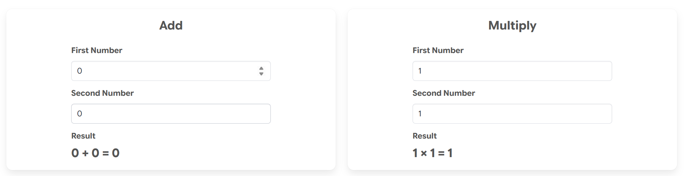

Building Reusable UI Components with Svelte 5 Custom Elements
Modern web applications often face a common challenge: how do you add sophisticated, interactive components to server-rendered pages without rewriting your entire application as a single-page app (SPA)? In this post, I'll share how I'm using Svelte 5 Custom Elements in my ASP.NET MVC application to achieve progressive enhancement with clean, maintainable code.
Check out the Svelte 5 Custom Elements Demo to see how these principles come together in a working example.
The Problem: Interactive Components in Server-Rendered Apps
This application uses ASP.NET MVC with Razor views for server-side rendering, which provides excellent SEO, fast initial page loads, and straightforward authentication. However, certain features—like an interactive value analysis tool for artists or an educational evolution timeline—require rich client-side interactivity that's difficult to achieve with vanilla JavaScript alone.
I needed a solution that would:
- Encapsulate complex logic without polluting the global scope
- Manage reactive state without manual DOM manipulation
- Coexist peacefully with existing JavaScript libraries (Alpine.js, vanilla JS)
- Remain maintainable as the component library grows
- Follow web standards for maximum portability and longevity
The Solution: Svelte 5 Custom Elements
Custom Elements (part of the Web Components standard) allow you to define reusable HTML tags with encapsulated behavior. By compiling Svelte 5 components as Custom Elements, I get the best of both worlds: Svelte's excellent developer experience and reactive state management, combined with browser-native component registration.
Here's what a simple calculator component looks like:
<svelte:options customElement={{ tag: "add-calculator", shadow: "none" }} />
<script lang="ts">
let firstNumber: number = $state(0);
let secondNumber: number = $state(0);
let result: number = $derived(firstNumber + secondNumber);
</script>
<div class="add-calculator">
<input type="number" bind:value={firstNumber} />
<input type="number" bind:value={secondNumber} />
<p>Result: {result}</p>
</div>
Using it in a Razor view is straightforward:
@section PageScripts {
<script src="~/js/svelte-build/forms.iife.js" asp-append-version="true"></script>
}
<add-calculator></add-calculator>
That's it. No initialization code, no framework mounting logic—just a script tag and a custom element.
Why Svelte 5 Specifically?
Svelte 5 introduced Runes syntax ($state, $effect, $derived) which provides explicit, predictable reactive state management. Unlike Svelte 4's "magic" reactivity, Runes make it clear what's reactive and when effects run. This is particularly valuable in Custom Elements where you need precise control over component lifecycle.
Key advantages:
- No runtime: Svelte compiles to vanilla JavaScript, resulting in small bundle sizes
- Reactive by default: UI automatically updates when state changes
- TypeScript support: First-class TypeScript integration with excellent type inference
- Modern syntax: Clean, intuitive API that's easy for new developers to understand
Architecture: Logical Bundle Organization
Rather than building a monolithic components.js bundle, I organize components into three logical bundles:
1. forms.iife.js (~29KB, ~11KB gzipped)
Form-based utilities like calculators that are likely to be used together. These are small, focused components that benefit from sharing a bundle.
2. value-tool.iife.js (~63KB, ~21KB gzipped)
The ValueTool—a complex image analysis tool for artists. This standalone component has its own bundle because it's:
- Large and feature-rich
- Used independently on a single page
- Updated frequently during development
This approach provides:
- Efficient loading: Pages only download the bundles they need
- Better caching: Changes to one component don't invalidate unrelated bundles
- Faster development: Watch mode rebuilds only the bundle you're working on
- Logical grouping: Related components share infrastructure
Technical Implementation
Build System
I use Vite with separate configuration files for each bundle:
// vite.config.forms.js
export default defineConfig({
plugins: [svelte({ compilerOptions: { customElement: true } })],
build: {
rollupOptions: {
input: resolve(__dirname, 'src/entries/forms.ts'),
output: {
entryFileNames: 'forms.iife.js',
format: 'iife',
name: 'Forms'
}
}
}
});
Why separate Vite configs? Rollup (Vite's bundler) cannot build multiple IIFE bundles in a single pass due to code-splitting limitations. Separate bundles are desirable where large components or significant groupings are used independently in separate areas of the application. IIFE format requires all code inlined, but multiple entry points trigger code-splitting. Separate configs work around this constraint while providing excellent developer experience.
NPM Scripts
{
"build": "npm run build:forms && npm run build:value-tool",
"build:forms": "vite build --config vite.config.forms.js",
"watch:forms": "vite build --watch --config vite.config.forms.js"
}
During development, npm run watch:forms rebuilds only the forms bundle in sub-second increments—far faster than rebuilding everything.
Shadow DOM Consideration
I use shadow: "none" to disable Shadow DOM encapsulation:
<svelte:options customElement={{ tag: "add-calculator", shadow: "none" }} />
This allows global styles (Bulma CSS, Font Awesome) to apply to components without duplication. Component-specific styles use prefixed class names (.add-calculator) to avoid conflicts. For truly isolated components, I omit this option to get default Shadow DOM encapsulation.
Benefits in Practice
1. Progressive Enhancement
I can add rich interactivity to existing server-rendered pages without refactoring the entire application. Each page remains simple HTML with optional enhanced functionality.
2. Framework Independence
Custom Elements are framework-agnostic. They work alongside Alpine.js, jQuery, or vanilla JavaScript without conflicts. If I ever migrate to a different backend framework, the components work unchanged.
3. Standards Compliance
Web Components are a W3C standard supported by all modern browsers. No polyfills needed, no framework lock-in.
4. Developer Experience
Svelte's developer experience is exceptional:
- TypeScript with strict typing
- Excellent VS Code extension with syntax highlighting
- Fast builds with Vite
- Hot module replacement during development
5. Maintainability
Each component encapsulates its logic, state, and behavior. No more hunting through global JavaScript files to understand where state lives or how events propagate.
Real-World Example: Calculator Components
I've created a simple demonstration page showcasing calculator components built with this architecture:

These calculators demonstrate:
- Reactive state: Values update automatically as you type
- Computed properties: Results calculate without manual event handlers
- Clean encapsulation: Each component manages its own state
- Styling integration: Bulma CSS applies from the parent page
The code is minimal, the components are reusable, and the user experience is smooth.
Code Organization
SrcScriptsSvelte/
├── src/
│ ├── entries/ # Bundle entry points
│ │ ├── forms.ts
│ │ └── value-tool.ts
│ ├── components/ # Svelte components
│ │ ├── AddCalculator.svelte
│ │ ├── MultiplyCalculator.svelte
│ │ └──ValueTool.svelte
│ └── lib/ # Shared utilities
│ ├── value-tool/
│ │ ├── types.ts
│ │ ├── imageProcessor.ts
│ │ └── histogramRenderer.ts
├── vite.config.forms.js # Forms bundle config
└── vite.config.value-tool.js # ValueTool bundle config
Utilities are organized by feature in lib/ folders, with TypeScript interfaces separated into types.ts files. This makes it easy to find related code and promotes reusability.
When to Create a New Bundle
I follow these guidelines:
Create a standalone bundle when:
- The component is large (>40KB)
- It's used independently on a single page
- It has significant supporting utilities
- Changes shouldn't invalidate other component caches
Add to the forms bundle when:
- The component is small (<10KB)
- It's likely to be used with other form components
- It shares utilities with existing form components
Lessons Learned
1. Start Simple
I initially tried building all bundles in one Vite config with environment variables. This failed due to Rollup's IIFE limitations. The simpler approach—separate configs—works better and is easier to understand.
2. Watch Mode is Essential
Building all three bundles takes ~2 seconds. During development, watching a single bundle rebuilds in <1 second. Use npm run watch:forms and iterate quickly.
3. TypeScript Strictness Pays Off
Strict TypeScript catches bugs early. I define interfaces for all data structures and use typed function parameters throughout. This makes refactoring safe and IDE autocomplete accurate.
Conclusion
Svelte 5 Custom Elements provide an elegant solution for adding interactive components to server-rendered applications. By compiling to browser-native Custom Elements, I get:
- Clean encapsulation of logic and state
- Standards compliance without framework lock-in
- Progressive enhancement without full SPA rewrite
- Excellent developer experience with modern tooling
- Maintainable architecture that scales with the application
The approach works beautifully with ASP.NET MVC, but the same patterns apply to any backend framework. If you're looking to add sophisticated client-side interactivity without committing to a full SPA architecture, Svelte 5 Custom Elements are worth exploring.